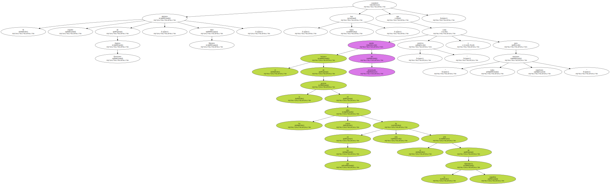
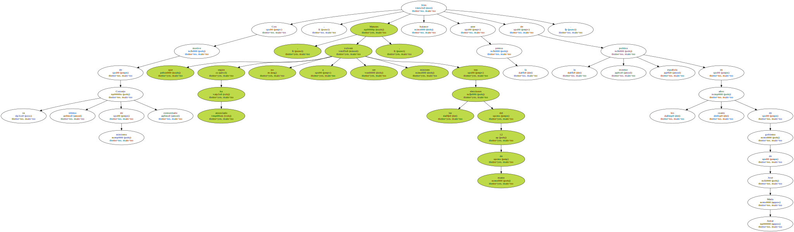
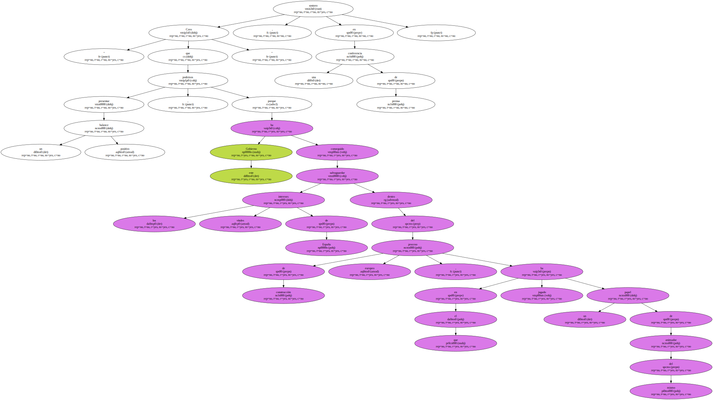
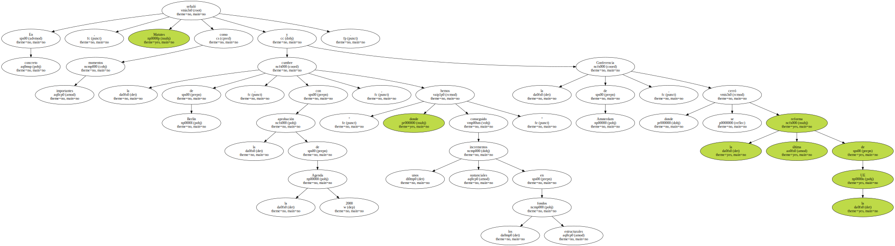
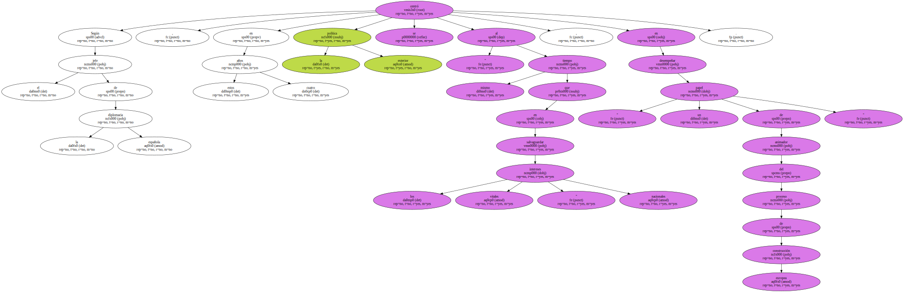
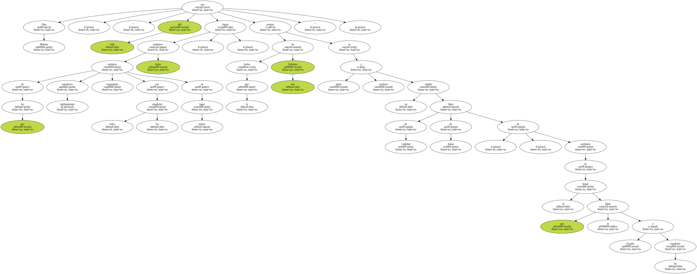
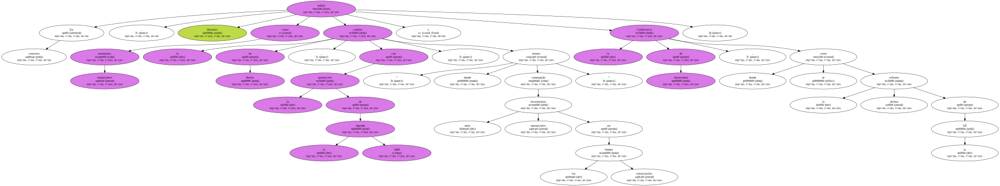
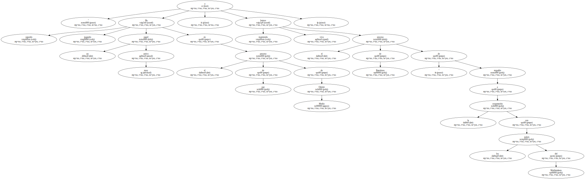

El ministro español de Asuntos Exteriores , Abel Matutes , consideró hoy , lunes , que el balance de la gestión en los cuatro años en los que ha sido el jefe de la diplomacia española puede ser presentado como " positivo " y para " sentirnos todos orgullosos ".
Con motivo de su último Consejo de ministros comunitario , Matutes , que según ha anunciado no volverá a ser ministro tras las elecciones del 12 de marzo , hizo balance ante la prensa de la política exterior española en los cuatro años de gobierno de José María Aznar.
" Creo que podemos presentar un balance positivo , porque este Gobierno ha conseguido salvaguardar los intereses vitales de España dentro del proceso de construcción europeo , en el que ha jugado un papel de animador del mismo " , sostuvo en una conferencia de prensa.
En concreto , Matutes señaló como momentos importantes la cumbre de Berlín , con la aprobación de la Agenda 2000 , " donde hemos conseguido unos incrementos sustanciales en los fondos estructurales " y la Conferencia de Amsterdam , donde se cerró la última reforma de la UE.
Según el jefe de la diplomacia española , en estos cuatro años la política exterior se centró " al mismo tiempo que en salvaguardar los intereses vitales " nacionales , en desempeñar " un papel de animador del proceso de construcción europea ".
Para Matutes , " todo ello son logros de los que podemos sentirnos todos legítimamente orgullosos , empezando por todos los españoles en primer lugar , porque lo que ha hecho este Gobierno es armar y conducir un caballo lleno de vitalidad , de fuerza , de confianza en el futuro que se llama España y los españoles ".
También dijo que considera que España ha tenido " una presencia muy importante en el escenario internacional ".
" Ha seguido jugando un papel muy activo en el proceso de paz de Oriente Medio , y hemos mantenido vivo el proceso de Barcelona " de respaldo a la cooperación con los países del Mediterráneo.
Y hoy " España es un socio de referencia , un país con gran prestigio en Iberoamérica " , y " además , ya hemos puesto los pies con fuerza en Asia , que era un continente hasta ahora con poca presencia española " , agregó.